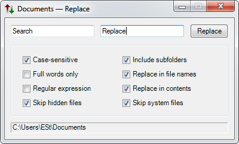

ContextReplace is a simple search&replace utility that adds itself to folder context menus.
Download 0.3.1 (13 KB zip, installer; .Net 3.5 required)
Warning: binary files will be affected, use with caution!

Language files: Español (Mariano Ramonda), Русский, Svenska (Mikael Hiort af Ornäs)
Bugs, translation: eustru@gmail.com | Changelog | Code